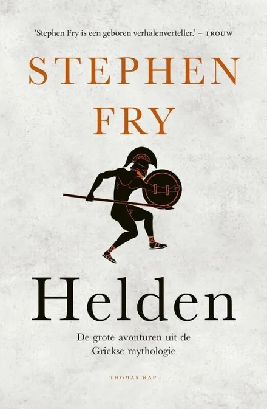
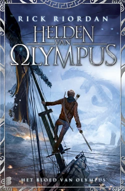
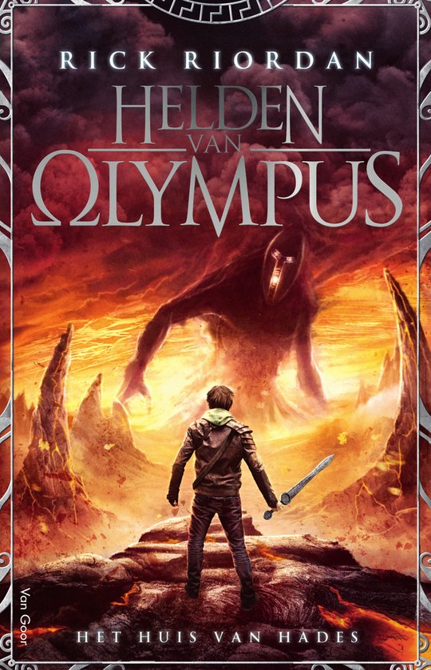
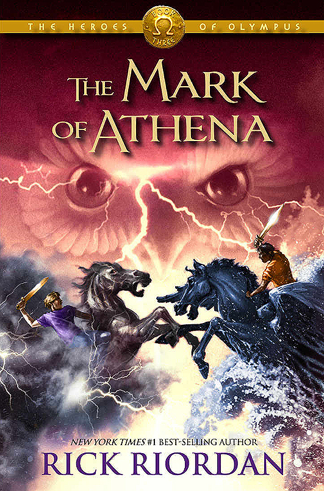
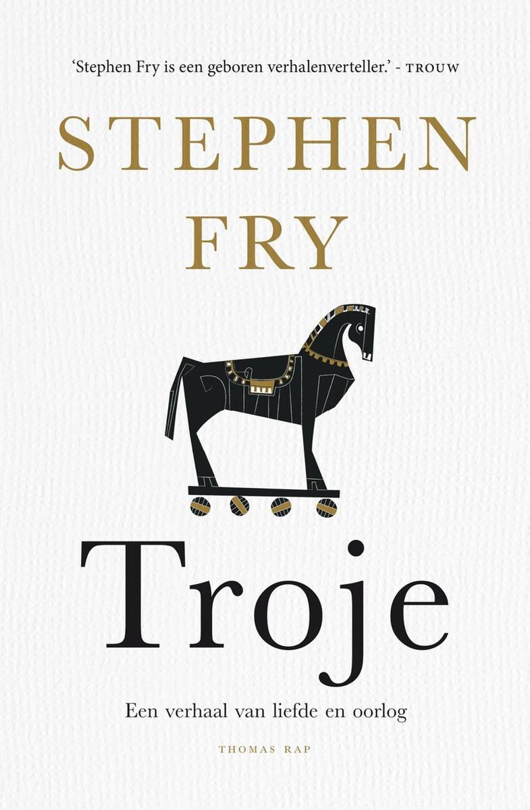
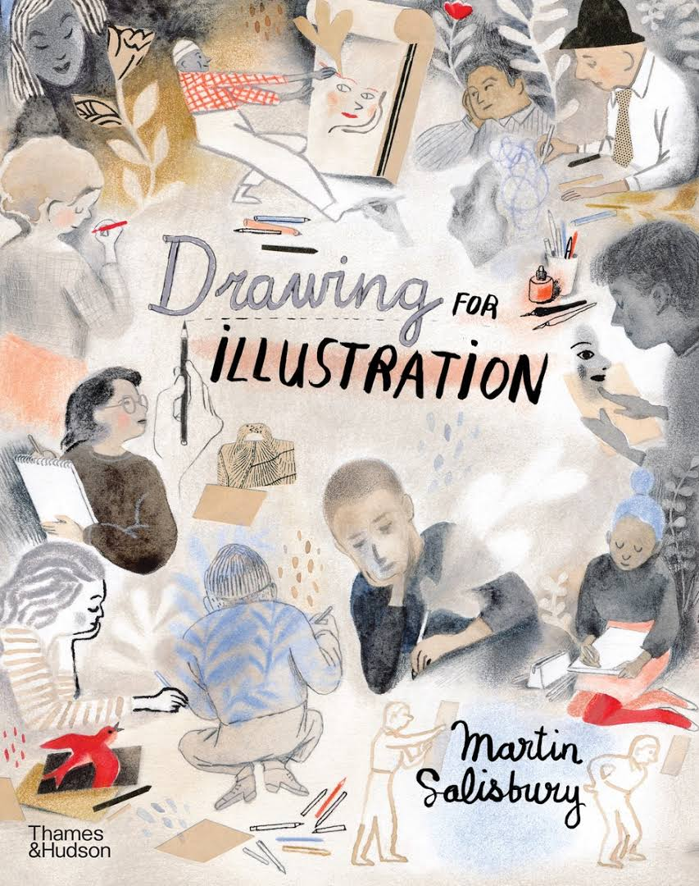
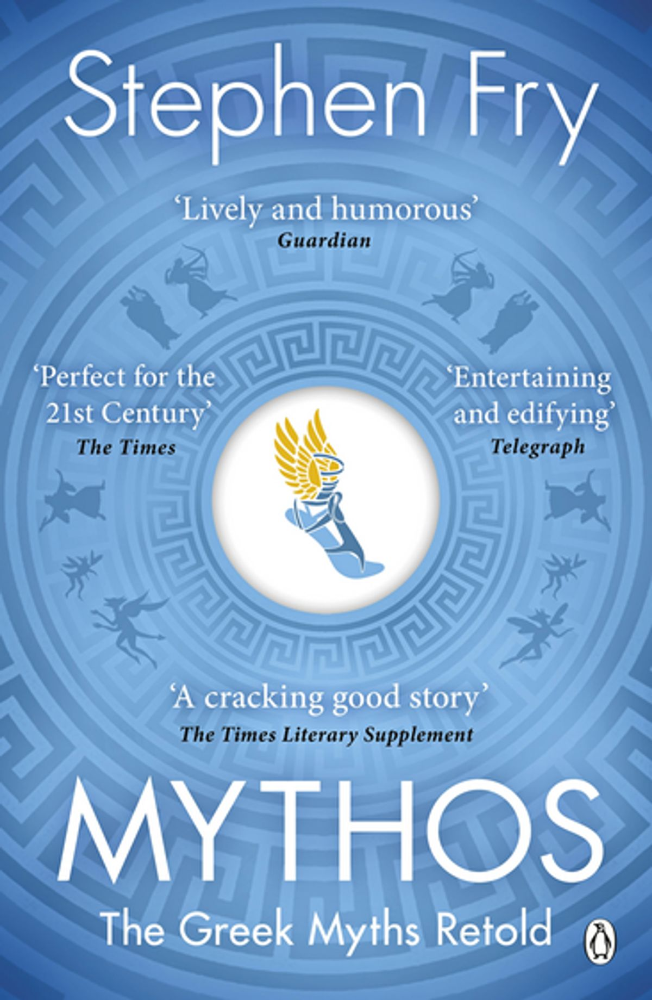

|
title: good girl, bad blood author: holly jackson pages: 416 language read in: english started: 13/04, ended: 14/04 |
|  | title: helden (heroes) author: stephen fry pages: ? language read in: dutch started: 8/7/2025 |
| title: sunrise of the reaping author: suzanne collins pages: ? language read in: dutch started: 11/7/2025, ended: 13/7/2025 |
|  | title: the blood of olympus author: rick riordan pages: ? language read in: dutch started: 9/7/2025, ended: 11/7/2025 |
|  | title: the house of hades author: rick riordan pages: ? language read in: dutch started: 2/7/2025, ended: 8/7/2025 |
|  | title: the mark of athena author: rick riordan pages: 478 language read in: dutch started: 28/6/2025, ended: 2/7/2025 |
|  | title: troje (troy) author: stephen fry pages: 306 of the story & 59 pages afterword & name list language read in: dutch started: 5/6/2025, ended: 23/6/2025 |
|
title: good girl, bad blood author: holly jackson pages: 416 language read in: english started: 13/04, ended: 14/04 |
| title: 1984 author: george orwell pages: 294 language read in: dutch started: 12/3/2025, ended: dnf, might finish later |
| title: the mirror crack'd from side to side author: agatha christie pages: 222 language read in: dutch started: 5/3/2025, ended: 9/3/2025 |
|  | title: drawing for illustration author: martin salisbury pages: language read in: english started: 25/12/2024, ended: ... |
|  | title: mythos author: stephen fry pages: +- 400 language read in: english started: 16/1/2025, ended: 2/3/2025 |
| title: gender queer author: maia kobabe pages: 240 language read in: dutch started: ?/1/2025, ended: 31/1/2025 |